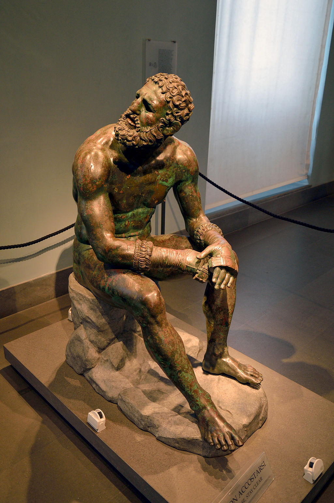

<head>
<meta charset="UTF-8" />
<meta name="keywords" content="drawing, painting" />
<meta name="description" content="drawings by Sunjy" />
<title>Sunjy</title>
<link rel="shortcut icon" type="image/x-icon" href="../../mImages/mCommon/favicon.ico" media="screen" />
<link rel="stylesheet" type="text/css" href="../../mCsses/mCommon/mCssA.css" />
<link rel="stylesheet" type="text/css" href="../../mCsses/mCommon/mCssB.css" />
<link rel="stylesheet" type="text/css" href="../../mCsses/mCommon/mCssC.css" />
<link rel="stylesheet" type="text/css" href="../../mCsses/mCommon/mCssD.css" />
<link rel="stylesheet" type="text/css" href="../../mCsses/mContent/mCssA.css" />
<link rel="stylesheet" type="text/css" href="../../mCsses/mContent/mCssB.css" />
<link rel="stylesheet" type="text/css" href="../../mCsses/mContent/mCssC.css" />
<link rel="stylesheet" type="text/css" href="../../mCsses/mContent/mCssD.css" />
</head>
<script type="text/javascript" src="../../mScripts/mContent/mContentAA.js" /></script>
<script type="text/javascript" src="../../mScripts/mContent/mContentAB.js" /></script>
<script type="text/javascript" src="../../mScripts/mContent/mContentAC.js" /></script>
<script type="text/javascript" src="../../mScripts/mContent/mContentAD.js" /></script>
<script type="text/javascript"></script> 
<script type="text/javascript">
document.write('<div class="mImgAbsolute"></div>');
/*
document.write('<p class="mFontSizeBColor" />From a white paper...</p>');
document.write('<table class="center"><tr><td>');
document.write('');
document.write('</td></tr></table>');
*/
</script>


<script type="text/javascript">
document.write('<p class="mFontSizeBColor" />Boxer at Rest</p>');
document.write('<p class="mFontSizeSColor" />The “Boxer at Rest” is a Hellenistic Greek bronze sculpture of a sitting nude boxer at rest, still wearing his leather hand-wraps.<br><br>The Boxer at Rest is one of the finest examples of bronze sculptures to have survived from the ancient world. Survival of bronze sculptures from 2,000 years ago is rare, as they were often melted down during times of strife and turbulence.<br><br>This artwork comes from a period in Greek art when there is a movement away from idealized heroic depictions of the body and youth, and an exploration of emotional themes and greater realism.<br><br>A masterpiece of Hellenistic sculpture, it depicts a muscled torso with a scarred and bruised face, broken nose, and a mouth suggesting broken teeth.<br><br>The sculpture is soldered together from eight segments, separately cast through the lost-wax process. The joins have been filed and finished to be almost invisible.<br><br>The lips and wounds and scars about the face were initially inlaid with copper, and additional copper inlays on the right shoulder, forearm, and thigh represented drops and trickles of blood.<br><br>The Boxer was discovered on the slopes of the Quirinal Hill in 1885, at the remains of the Baths of Constantine.<br><br>It appears that it had been carefully buried in antiquity. On the Quirinal Hill, Constantine ordered the erection of his baths, the last thermae complex erected in imperial Rome.<br><br>These are now lost, having been incorporated into Renaissance Rome, with only some drawings from the 16th century remaining.<br><br>The fingers and toes of the “Boxer at Rest” were worn from being rubbed by passers-by in ancient times.<br><br>During some turbulent times, the Boxer was carefully buried to preserve its talismanic value when the Baths were abandoned after the Goths cut the aqueduct’s water that fed them.<br><br>An archaeologist who was present at the sculpture’s discovery wrote:<br><br>I have witnessed … many discoveries;<br>I have experienced surprise after surprise;<br>I have sometimes and most unexpectedly met with real masterpieces;<br>but I have never felt such an extraordinary impression as the one created by the sight of this magnificent specimen of a semi-barbaric athlete,<br>coming slowly out of the ground,<br>as if awakening from a long repose after his gallant fights.<br>– Rodolfo Lanciani<br><br>The “Boxer at Rest” is now in the collection of the National Museum of Rome, normally displayed in the Palazzo Massimo alle Terme.<br></p>');
document.write('<table class="center" /><tr><td>');
document.write('<br>The Boxer at Rest is one of the finest examples of bronze sculptures to have survived from the ancient world. Survival of bronze sculptures from 2,000 years ago is rare, as they were often melted down during times of strife and turbulence.<br><br>This artwork comes from a period in Greek art when there is a movement away from idealized heroic depictions of the body and youth, and an exploration of emotional themes and greater realism.<br><br>A masterpiece of Hellenistic sculpture, it depicts a muscled torso with a scarred and bruised face, broken nose, and a mouth suggesting broken teeth.<br><br>The sculpture is soldered together from eight segments, separately cast through the lost-wax process. The joins have been filed and finished to be almost invisible.<br><br>The lips and wounds and scars about the face were initially inlaid with copper, and additional copper inlays on the right shoulder, forearm, and thigh represented drops and trickles of blood.<br><br>The Boxer was discovered on the slopes of the Quirinal Hill in 1885, at the remains of the Baths of Constantine.<br><br>It appears that it had been carefully buried in antiquity. On the Quirinal Hill, Constantine ordered the erection of his baths, the last thermae complex erected in imperial Rome.<br><br>These are now lost, having been incorporated into Renaissance Rome, with only some drawings from the 16th century remaining.<br><br>The fingers and toes of the “Boxer at Rest” were worn from being rubbed by passers-by in ancient times.<br><br>During some turbulent times, the Boxer was carefully buried to preserve its talismanic value when the Baths were abandoned after the Goths cut the aqueduct’s water that fed them.<br><br>An archaeologist who was present at the sculpture’s discovery wrote:<br><br>I have witnessed … many discoveries;<br>I have experienced surprise after surprise;<br>I have sometimes and most unexpectedly met with real masterpieces;<br>but I have never felt such an extraordinary impression as the one created by the sight of this magnificent specimen of a semi-barbaric athlete,<br>coming slowly out of the ground,<br>as if awakening from a long repose after his gallant fights.<br>– Rodolfo Lanciani<br><br>The “Boxer at Rest” is now in the collection of the National Museum of Rome, normally displayed in the Palazzo Massimo alle Terme.<br>" />');
document.write('</td></tr></table>');
</script>


